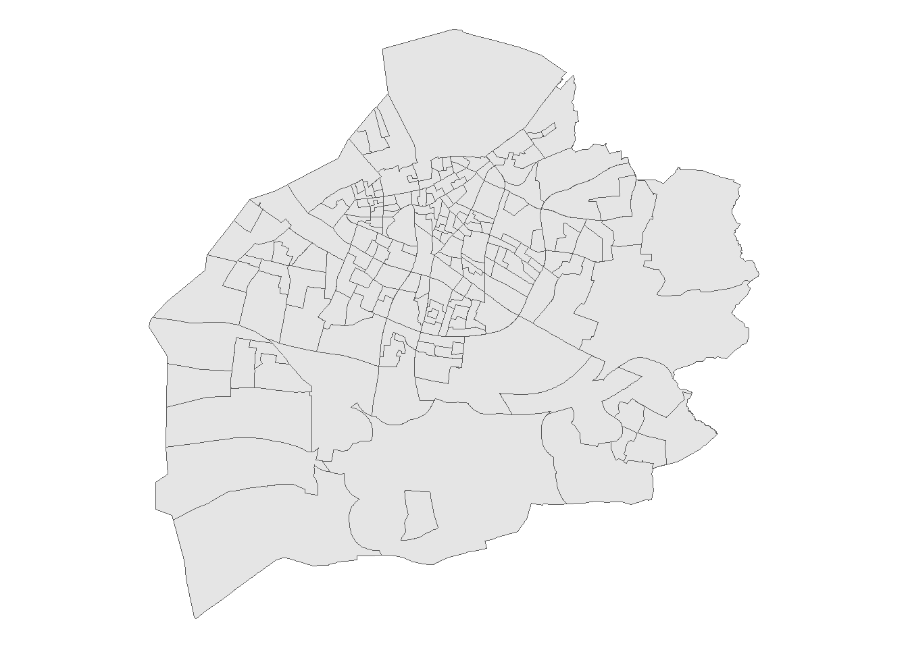
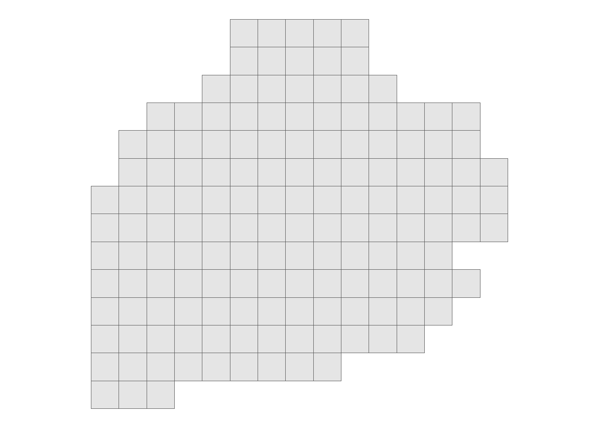
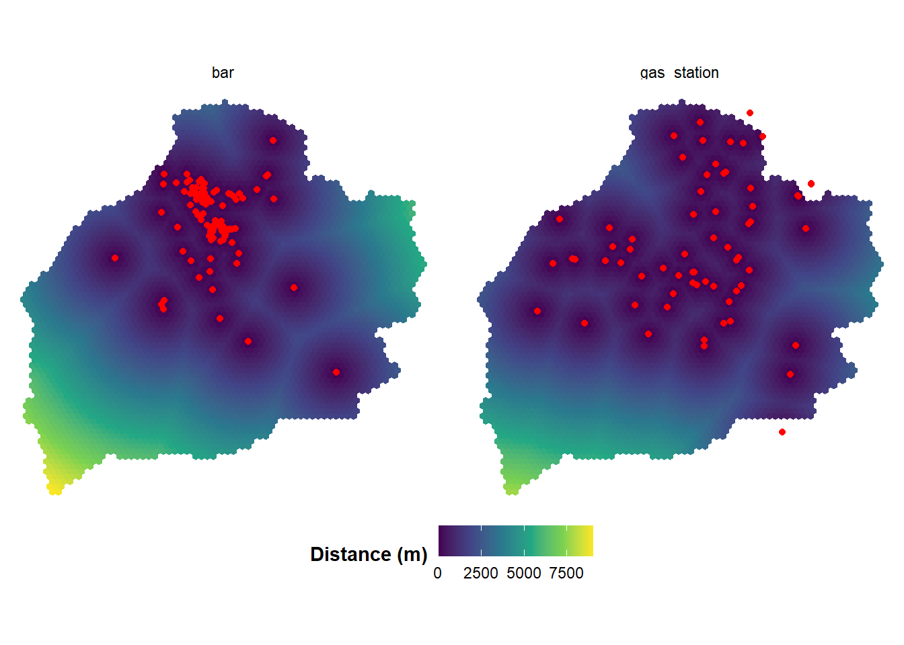

Spatial Features
In criminology there is a considerable research on the role that fixed spatial features in the environment have on crime. These spatial risk factors have criminogenic qualities that make them “attractors” or “generators”(Brantingham and Brantingham 1995). Absent some change, these places typically contribute a disproportionate share of crime that is largely stable over time(Sherman, Gartin, and Buerger 1989). The classic example is a bar or night club. Alcohol plays a large role in a lot of crime, and locations where many people congregate and become intoxicated also have higher incidences of crime. We can use information about the environment to help solve problems or prioritize patrol areas.
One challenge in research is obtaining the point locations for these features. Generally when we perform some kind of spatial analysis we have a study area (e.g. a city or other boundary file) and a set of labeled point features corresponding to the locations of interest. However, reliable places to get this information is often hard to come by. Some cities provide open data portals with commercial information, but these are typically limited to larger cities. In my work I’ve had people ask how to get spatial risk factors for their research, often times for something related to the “Risk Terrain Modeling” approach of spatial analysis. I’ve worked on a few projects now where I’ve had to generate these myself, and have had some success using open data sources like Google to help with it.
Querying Google Places
Google has a lot of paid API services which are quite useful for researchers. In most cases there is a free tier, and for smaller one-off projects this makes their API services attractive for research. Let’s walk through an example of how we might do this. For our example we will use the Swedish city of Malmö (which, incidentially is a very lovely city I’ve been lucky enough to visit). We have a shapefile that looks like this:
Our goal is to query theGoogle Places API to get the locations of criminogenic spatial risk factors (here, bars and gas stations). One significant limitation with the Google Places API is that there is a limit to the number of locations that will show up for a single query. This means if you ran the query on the entire city, it would only return up to 20 locations. However, we can bypass this by running multiple queries on smaller spatial regions. Other bloggers have provided similar advice as well (see here and here).
To do the actual interfacing with the Google Places API we will use the very handy googleway package.
Splitting up into a grid
Code
# GOOGLE PLACES API CODE
# ================================================= #
# Giovanni Circo
# gmcirco42@gmail.com
#
# Code to query google place api
# Divides a boundry shapefile into grid cells
# of radius r, then queries the api for each cell
#
# NOTE:
# Only requires a free version of the API. Doesn't
# incur any costs.
# ================================================= #
library(googleway)
library(sf)
library(tidyverse)
# API Key
# instructions here:
# https://developers.google.com/maps/documentation/places/web-service/get-api-key
mykey <- "[INSERT GOOGLE PLACES API KEY HERE]"
# Location shapefile
boundry <- st_read("...\DeSo_Malmö.shp")
# specify grid size (meters)
r <- 1200
# Make a grid
boundry_grid <- st_make_grid(boundry, cellsize = r)
boundry_grid <- boundry_grid[boundry]
# Transform to lat\lon
# Extract coords
area_coords <- st_transform(boundry_grid, crs = 4326) %>%
st_centroid() %>%
st_coordinates() %>%
data.frame() %>%
select(lat = Y, lon = X)We can divide the city into a series of grids, then iterate through each grid cell and query within it. This way we are more likely to obtain all of the relevant features in that grid cell without hitting the limit. Here, I create 150 1200 square meter grid cells, which gives us something like this:

In addition we extract the X-Y coordinates for the grid centroid, which we will use as our location for the API query. This means we hit the API 150 times, once for each grid cell. This is well within the free number that Google allows.
Querying our features
Code
# EXTRACT FEATURES ON GRID
#----------------------------#
# Supported place type names:
# https://developers.google.com/maps/documentation/places/web-service/supported_types
# Features: gas_station, bar, liquor_store, night_club, pharmacy, restaurant
# Specify feature type
# number of grid cells
feature <- "bar"
n <- nrow(area_coords)
# First, set up function to query google places
# for each grid centroid
# add to a list
area_list <- list()
for(i in 1:n){
area_list[[i]] <-
google_places(location = unlist(area_coords[i,]),
place_type = feature,
radius = r,
key = mykey)
}
# Function to convert results from above
# to a dataframe suitable for rbinding
# then conversion to an sf object
convert_to_dataframe <-
function(x) {
a <- x$results
b <- tibble(
lat = a$geometry$location$lat,
lon = a$geometry$location$lng,
name = a$name,
types = a$types,
address = a$vicinity,
place_id = a$place_id
)
return(b)
}
# Rbind the results, and then un-nest on feature type
# This creates a long-form dataframe that you can then filter
# based on feature type
area_dataframe <-
do.call(rbind, lapply(area_list, convert_to_dataframe)) %>%
distinct(place_id, .keep_all = TRUE) %>%
unnest(types)
# Get just feature requested
feature_out <- area_dataframe %>%
filter(types %in% feature) %>%
distinct(address, .keep_all = TRUE)We can use the code above to iterate through each grid cell, hit the API, and then store the results in a list. I include a few helper functions to assist with pulling out the names and coordinates, binding them into a dataframe, and setting them up to export. The key bit of code is below, which is the part that queries the API for each of the grid cells:
area_list <- list()
for(i in 1:n){
area_list[[i]] <-
google_places(location = unlist(area_coords[i,]),
place_type = feature,
radius = r,
key = mykey)
}Calculating Grid Cell Distances
Code
compute_distance <- function(grid, feature){
# get nearest point from grid to feature
nearest <- st_nearest_feature(grid,feature)
nearest_dist <- st_distance(grid, feature[nearest,], by_element = TRUE)
return(nearest_dist)
}
# specify grid size (meters)
r <- 250
# Make a city grid
city <- st_make_grid(boundry, cellsize = r, square = FALSE)
city <- city[boundry]
# get distances
bar_dist <- compute_distance(city, bar)
gas_dist <- compute_distance(city, gas)
# create long-form dataframe
tbl <- tibble(city) %>%
mutate(bar = bar_dist,
gas_station = gas_dist) %>%
pivot_longer(-city,
names_to = "feature",
values_to = "dist") %>%
mutate(dist = as.numeric(dist)) %>%
st_as_sf()Now that we have our city boundary and our spatial risk factors, all we need to do now is compute the distance from each grid cell to its nearest risk factor. In the end, what we will want is a dataframe with grid cell ids, and columns corresponding to distance to the nearest feature. After merging them, we can create a nice map like this - showing the location sand distances of our risk factors.

You can then use these features in other kinds of spatial risk models (for a great walk through, see (Wheeler and Steenbeek 2021).The big advantage of this approach is that you have the flexibility to implement any kind of model you want at this point - whether it is a conventional RTM model, or a boosted tree model.
Full Code
Code
# GOOGLE PLACES API CODE
# ================================================= #
# Giovanni Circo
# gmcirco42@gmail.com
#
# Code to query google place api
# Divides a boundry shapefile into grid cells
# of radius r, then queries the api for each cell
#
# NOTE:
# Only requires a free version of the API. Doesn't
# incur any costs.
# ================================================= #
library(googleway)
library(sf)
library(tidyverse)
# API Key
# instructions here:
# https://developers.google.com/maps/documentation/places/web-service/get-api-key
mykey <- "[INSERT GOOGLE PLACES API KEY HERE]"
# Location shapefile
boundry <- st_read("DeSo_Malmö.shp")
# specify grid size (meters)
r <- 1200
# Make a grid
boundry_grid <- st_make_grid(boundry, cellsize = r)
boundry_grid <- boundry_grid[boundry]
# Transform to lat\lon
# Extract coords
area_coords <- st_transform(boundry_grid, crs = 4326) %>%
st_centroid() %>%
st_coordinates() %>%
data.frame() %>%
select(lat = Y, lon = X)
plot(boundry_grid)
# EXTRACT FEATURES ON GRID
#----------------------------#
# Supported place type names:
# https://developers.google.com/maps/documentation/places/web-service/supported_types
# Features: gas_station, bar, liquor_store, night_club, pharmacy, restaurant
# Specify feature type
# number of grid cells
feature <- "bar"
n <- nrow(area_coords)
# First, set up function to query google places
# for each grid centroid
# add to a list
area_list <- list()
for(i in 1:n){
area_list[[i]] <-
google_places(location = unlist(area_coords[i,]),
place_type = feature,
radius = r,
key = mykey)
}
# Function to convert results from above
# to a dataframe suitable for rbinding
# then conversion to an sf object
convert_to_dataframe <-
function(x) {
a <- x$results
b <- tibble(
lat = a$geometry$location$lat,
lon = a$geometry$location$lng,
name = a$name,
types = a$types,
address = a$vicinity,
place_id = a$place_id
)
return(b)
}
# Rbind the results, and then un-nest on feature type
# This creates a long-form dataframe that you can then filter
# based on feature type
area_dataframe <-
do.call(rbind, lapply(area_list, convert_to_dataframe)) %>%
distinct(place_id, .keep_all = TRUE) %>%
unnest(types)
# Get just feature requested
feature_out <- area_dataframe %>%
filter(types %in% feature) %>%
distinct(address, .keep_all = TRUE)
# Now export as a shapefile
# re-assign the crs of the boundry shapefile
feature_out %>%
st_as_sf(coords = c('lon','lat'), crs = 4326) %>%
st_transform(crs = st_crs(boundry)) %>%
st_write(paste0("Desktop\\",feature,".shp"))References
Brantingham, Patricia, and Paul Brantingham. 1995. “Criminality of Place: Crime Generators and Crime Attractors.” European Journal on Criminal Policy and Research 3: 5–26.
Sherman, Lawrence W, Patrick R Gartin, and Michael E Buerger. 1989. “Hot Spots of Predatory Crime: Routine Activities and the Criminology of Place.” Criminology 27 (1): 27–56.
Wheeler, Andrew P, and Wouter Steenbeek. 2021. “Mapping the Risk Terrain for Crime Using Machine Learning.” Journal of Quantitative Criminology 37: 445–80.